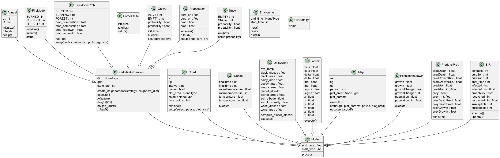
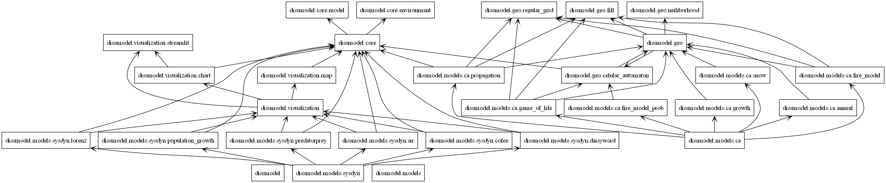
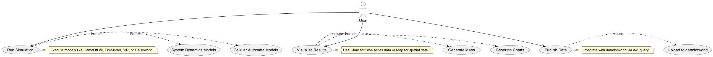
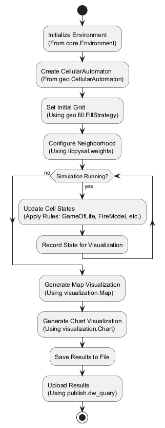

Visão Geral do Sistema
Esta seção apresenta uma visão geral da arquitetura do projeto dissmodel, começando com o diagrama de classes, que detalha todas as classes do projeto e suas relações, seguido pelo diagrama de pacotes, que destaca as dependências entre os módulos do sistema.
Diagrama de Classes
O diagrama abaixo, gerado com pyreverse, mostra todas as classes do projeto dissmodel e suas relações, incluindo herança e associações entre os módulos core, geo, models/ca, models/sysdyn, visualization e publish.

Diagrama de Pacotes
O diagrama abaixo ilustra a organização dos módulos do projeto e suas interdependências.

Diagrama de Casos de Uso
O diagrama abaixo mostra os principais casos de uso do sistema, incluindo execução de simulações, visualização de resultados e publicação de dados.

Diagrama de Atividades
O diagrama abaixo descreve o fluxo de execução de uma simulação com CellularAutomaton.

Descrição
O projeto dissmodel é organizado em módulos que estruturam as funcionalidades de simulação, visualização e publicação de dados. Abaixo está uma descrição detalhada dos módulos e suas interdependências, conforme ilustrado nos diagramas:
- core: Contém as classes base
EnvironmenteModel, que herdam desalabim.Environmentesalabim.Component, respectivamente, fornecendo a base para todas as simulações. - geo: Gerencia a geração e manipulação de espaços geográficos, com a classe
CellularAutomatone funções utilitárias comofill,neighborhooderegular_grid. - models: Dividido em dois subpacotes:
- ca: Inclui modelos de autômatos celulares, como
GameOfLife,FireModel,Snow,PropagationeAnneal, que herdam degeo.CellularAutomaton. - sysdyn: Inclui modelos de dinâmica de sistemas, como
SIR,Daisyworld,PredatorPrey,PopulationGrowth,LorenzeCoffee, que herdam decore.Model. - visualization: Responsável pela visualização de resultados, com classes como
CharteMap, que herdam decore.Modele utilizam bibliotecas comomatplotlib. - publish: Gerencia a integração com
datadotworldpara publicação de dados, utilizando a funçãodw_query.
As setas nos diagramas indicam dependências, como models/ca dependendo de geo e core, visualization dependendo de core e bibliotecas externas (e.g., matplotlib), e publish dependendo de datadotworld e geopandas.
O diagrama de classes detalha as relações entre classes, como a herança de CellularAutomaton e modelos específicos (GameOfLife, SIR, etc.) de Model, além de associações com utilitários como geo.fill.FillStrategy e libpysal.weights.